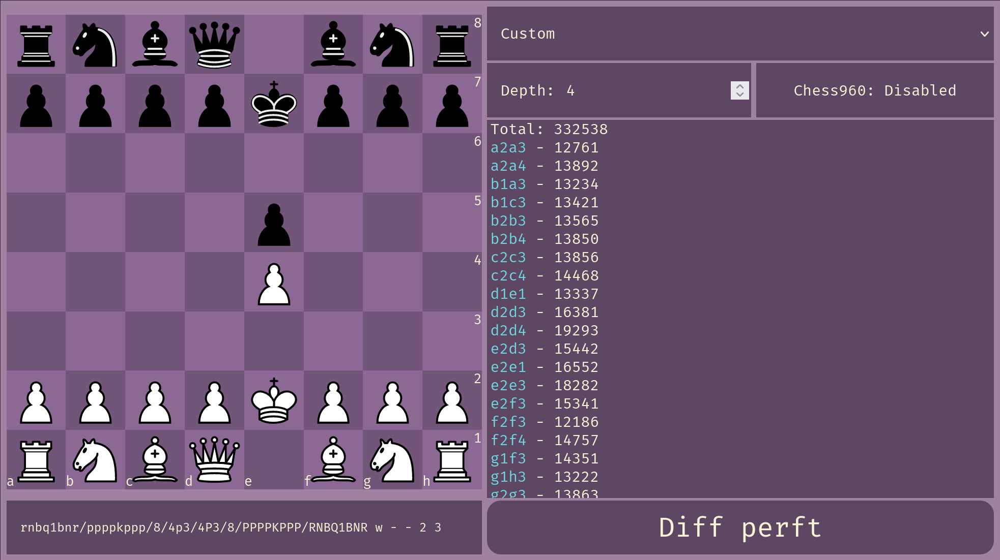
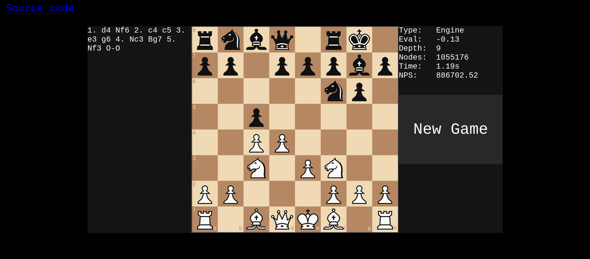
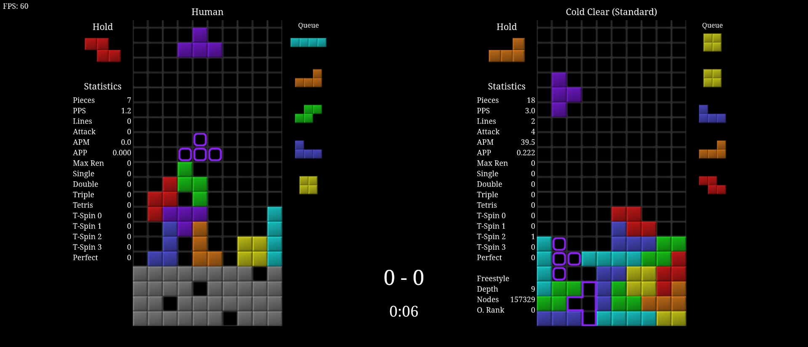
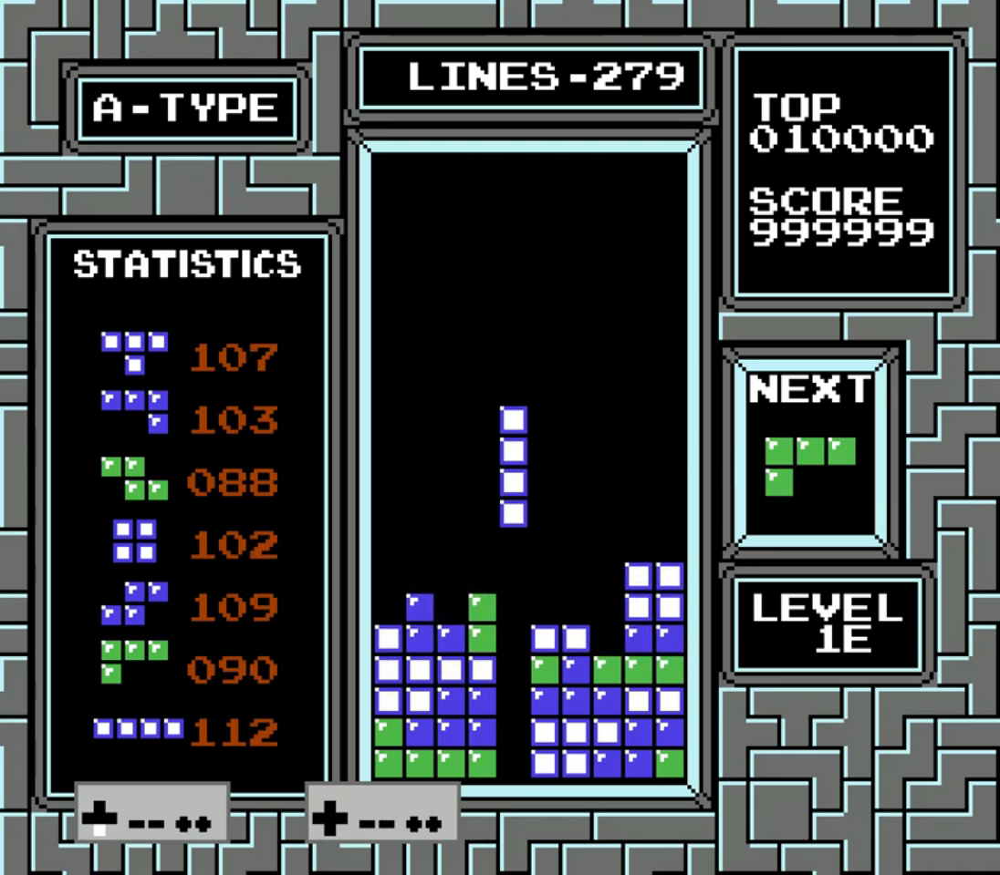
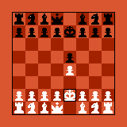

Projects
cozy-chess
$ cargo run --release --example perft -- 7
Compiling cozy-chess v0.3.0
Finished release [optimized] target(s) in 6.37s
Running `target\release\examples\perft.exe 7`
3195901860 nodes in 10.05s (318045465 nps)
A fast Chess and Chess960 move generation library in Rust suitable for Chess engines.
webperft

A Chess and Chess960 move generation testing utility that helps you easily check perft results in the browser.
tantabus
A superhuman Chess and Chess960 engine written in Rust. Built on top of cozy-chess.
lunatic-web

A web client for a WebAssembly port of Lunatic, the much weaker predecessor to Tantabus.
cold-clear-web

A web client for a WebAssembly port of MinusKelvin's cold-clear Tetris AI.
pones
A work in progress NES emulator written in Rust.
ColdTaco

A C# program that leverages the Nintaco API to get cold-clear to play NES Tetris.
glowfish

A simple WASM-4 chess game with an optional "Vs CPU" mode.
nnue-rs
A Rust library for the inference of Stockfish NNUE neural networks.
mnist-digit-nn
A simple neural network-based digit classifier based on the MNIST database. Written as an excerise to better understand backpropagation and neural networks.
Unless stated otherwise, content on this website is licensed with CC BY-NC 4.0. Source code is licensed under the MIT license. Cited materials belong to their respective owners.
Like what I do? Support me on Ko-fi!